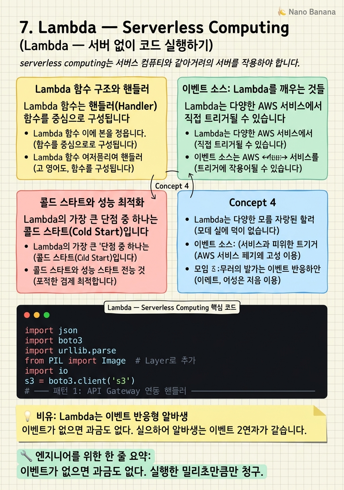

Lambda — Serverless Computing

🎯 학습 목표
- Lambda 함수를 작성하고 AWS 콘솔에서 테스트할 수 있다
- S3 이벤트로 Lambda를 트리거하는 패턴을 구현할 수 있다
- API Gateway + Lambda로 간단한 REST API를 만들 수 있다
- 콜드 스타트 문제와 해결 방법을 이해한다
- Lambda의 비용 모델(요청 수 + 실행 시간)을 계산할 수 있다
Lambda는 AWS의 FaaS(Function as a Service) 서비스입니다. 서버를 프로비저닝하거나 관리하지 않고도 코드를 실행할 수 있습니다. 코드를 함수(Function) 단위로 업로드하면, 이벤트가 발생할 때마다 AWS가 자동으로 코드를 실행하고 결과를 반환합니다.
Lambda의 핵심 아이디어는 이벤트 기반(Event-Driven) 아키텍처입니다. "무언가 일이 생겼을 때" 코드를 실행합니다:
- S3 버킷에 파일이 업로드되었을 때 → 썸네일 생성 - API Gateway로 HTTP 요청이 들어왔을 때 → JSON 응답 반환 - SQS 큐에 메시지가 쌓였을 때 → 이메일 발송 - 매 5분마다 (CloudWatch Events) → 데이터 크론 작업
 *이미지 출처: © Amazon Web Services, Inc. — [Creating event-driven architectures with Lambda](https://docs.aws.amazon.com/lambda/latest/dg/concepts-event-driven-architectures.html) (교육 목적 인용)*
Lambda의 비용 모델은 혁신적입니다. 요청 수 + 실행 시간(밀리초 단위)만큼만 과금됩니다. 함수가 실행되지 않을 때는 과금이 없습니다. 월 100만 건의 요청은 무료이며, 그 이후는 100만 건당 $0.20입니다.
핵심 내용
Lambda 함수 구조와 핸들러
Lambda 함수는 핸들러(Handler) 함수를 중심으로 구성됩니다. Python의 경우 lambda_function.lambda_handler(event, context) 형식이 기본입니다.
`python
def lambda_handler(event, context):
# event: 트리거로부터 전달된 데이터 (JSON)
# context: 함수 실행 환경 정보
print(f"요청 ID: {context.aws_request_id}")
return {
'statusCode': 200,
'body': 'Hello Lambda!'
}
`
event 객체의 구조는 어떤 서비스가 Lambda를 트리거했느냐에 따라 다릅니다. API Gateway에서 오면 HTTP 요청 정보가 담기고, S3에서 오면 버킷 이름과 키 정보가 담깁니다.
Lambda 제한 사항:
- 실행 시간: 최대 15분 (900초) - 메모리: 128MB ~ 10,240MB (메모리를 늘리면 CPU도 비례 증가) - 패키지 크기: 압축 50MB (unzipped 250MB), 더 크면 Lambda Layer나 S3에서 로드 - 임시 저장소: /tmp 디렉토리 512MB ~ 10GB - 동시 실행: 기본 계정 한도 1,000개 (Service Quota 증가 요청 가능)
Lambda에서 환경 변수를 사용해 설정을 코드에서 분리할 수 있습니다. DB 연결 정보·API 키 같은 민감한 정보는 AWS Secrets Manager 또는 Parameter Store에서 가져오세요.
이벤트 소스: Lambda를 깨우는 것들
Lambda는 다양한 AWS 서비스에서 직접 트리거될 수 있습니다.
푸시(Push) 방식 — AWS 서비스가 Lambda를 직접 호출: - API Gateway: HTTP/HTTPS 요청 → Lambda → JSON 응답 (REST API 구현) - S3: 파일 업로드/삭제 이벤트 - CloudWatch Events (EventBridge): 시간 기반 크론 또는 이벤트 패턴 - SNS: 메시지 발행 시 - Cognito: 사용자 등록/로그인 이벤트 - ALB: Application Load Balancer의 타겟으로 Lambda 사용
풀(Pull) 방식 — Lambda가 이벤트 소스를 폴링: - SQS: 큐에서 메시지 배치를 가져와 처리 - DynamoDB Streams: 테이블 변경 사항을 스트리밍으로 처리 - Kinesis: 실시간 스트리밍 데이터 처리
실용 예시 — S3 파일 업로드 시 Lambda 트리거: 이미지가 S3에 업로드되면 Lambda가 자동으로 실행되어 썸네일을 생성하는 패턴은 가장 많이 사용되는 Lambda 사용 사례입니다. S3 이벤트 알림에서 Lambda 함수를 대상으로 지정하면 됩니다.
콜드 스타트와 성능 최적화
Lambda의 가장 큰 단점 중 하나는 콜드 스타트(Cold Start)입니다. 함수가 오랫동안 호출되지 않으면 컨테이너가 종료됩니다. 다음 호출 시 새 컨테이너를 시작하는 데 수백 밀리초에서 수 초가 걸릴 수 있습니다.
| 런타임 | 콜드 스타트 시간(평균) | |---|---| | Python | ~150-300ms | | Node.js | ~100-200ms | | Java | ~500ms-2s | | Go | ~50-150ms |
콜드 스타트 최소화 전략:
- Provisioned Concurrency: 지정된 수의 컨테이너를 항상 예열 상태로 유지. 추가 비용 발생.
- 패키지 크기 최소화: 사용하지 않는 라이브러리 제거. 로딩 시간 단축.
- 연결 재사용: DB 연결을 핸들러 외부에서 초기화해 재사용.
- Graviton2 (arm64) 아키텍처: Intel 대비 약 20% 빠르고 저렴.
Lambda SnapStart (Java 11+): JVM 초기화 시점의 스냅샷을 캐싱해 콜드 스타트를 최대 10배 단축합니다.
동시성(Concurrency)도 중요한 개념입니다. Lambda는 동시 요청 수만큼 별도의 컨테이너를 생성합니다. 한 함수가 최대 동시성에 도달하면 후속 요청이 throttle(거부)됩니다. Reserved Concurrency로 특정 함수에 최소·최대 동시성을 보장할 수 있습니다.
💡 비유로 이해하기
Lambda를 이해하는 재미있는 비유는 필요할 때만 불러 쓰는 알바생입니다. 직원(EC2 서버)은 일이 있든 없든 항상 사무실에 있고 월급을 줘야 합니다. 반면 알바생(Lambda)은 일이 생겼을 때만 연락하면 됩니다. 주문이 들어오면 전화해서 오고, 처리하면 돌아갑니다. 주문이 없으면 비용도 없습니다.
이벤트 기반의 의미는 '바빠지면 알바생을 더 부른다'는 것입니다. 트래픽이 갑자기 100배 폭증해도 Lambda는 자동으로 100개의 컨테이너를 동시에 실행합니다. EC2였다면 수동으로 서버를 늘려야 했을 것입니다.
콜드 스타트는 처음 부르는 알바생이 오는 데 시간이 걸리는 것입니다. 자주 불리는 알바생(Warm Container)은 이미 대기하고 있어 바로 일을 시작하지만, 오랫동안 호출 없이 있다가 갑자기 부르면 이동 시간(콜드 스타트)이 발생합니다.
💻 코드 예시
아래 예제는 API Gateway와 연결된 Lambda 함수로 간단한 REST API를 구현하는 패턴입니다. S3 이벤트 트리거도 함께 보여줍니다.
import json
import boto3
import urllib.parse
from PIL import Image # Layer로 추가
import io
s3 = boto3.client('s3')
# ─── 패턴 1: API Gateway 연동 핸들러 ───────────────────
def api_handler(event, context):
"""GET /users?id=123 처리"""
query = event.get('queryStringParameters') or {}
user_id = query.get('id', 'unknown')
# CORS 헤더 포함 응답
return {
'statusCode': 200,
'headers': {
'Content-Type': 'application/json',
'Access-Control-Allow-Origin': '*'
},
'body': json.dumps({'userId': user_id, 'name': 'Alice'})
}
# ─── 패턴 2: S3 업로드 이벤트 트리거 ─────────────────
def s3_trigger_handler(event, context):
"""S3에 이미지 업로드 시 썸네일 자동 생성"""
for record in event['Records']:
bucket = record['s3']['bucket']['name']
# URL 인코딩 디코딩 (파일명에 한글·공백 포함 시 필수)
key = urllib.parse.unquote_plus(record['s3']['object']['key'])
# 원본 이미지 다운로드
response = s3.get_object(Bucket=bucket, Key=key)
img = Image.open(io.BytesIO(response['Body'].read()))
# 썸네일 생성 (200x200)
img.thumbnail((200, 200))
buffer = io.BytesIO()
img.save(buffer, format='JPEG')
buffer.seek(0)
# 썸네일 업로드 (thumbs/ 접두사 추가)
thumb_key = f'thumbs/{key}'
s3.put_object(Bucket=bucket, Key=thumb_key, Body=buffer,
ContentType='image/jpeg')
print(f"썸네일 생성 완료: {thumb_key}")api_handler에서 event['queryStringParameters']는 URL 쿼리 파라미터입니다. event['body']는 POST 바디입니다. s3_trigger_handler에서 event['Records']는 S3 이벤트 목록입니다. 한 번에 여러 파일이 업로드되면 여러 Records가 올 수 있어 반복문으로 처리합니다. PIL(Pillow) 라이브러리는 Lambda Layer로 추가해야 합니다.
🏭 현업에서의 평가
✅ 시니어가 보는 것
- 언제 Lambda가 적합하고 언제 EC2나 ECS가 나은지 판단하는가
- 콜드 스타트 문제를 인지하고 해결 방법을 제안하는가
- Lambda 실행 시간 15분 제한을 고려해 장시간 작업을 설계하는가
⚠️ 레드 플래그
- Lambda에서 외부 상태(파일·DB 커넥션)를 인스턴스 변수로 관리
- 동기 Lambda 체이닝(Lambda가 Lambda를 직접 호출) 안티패턴 사용
- 실행 시간이 15분을 초과하는 작업을 Lambda에 배치
🎤 예상 인터뷰 질문
- Lambda의 동시 실행 한도에 도달했을 때 어떤 일이 발생하고 어떻게 처리하겠습니까?
- Lambda에서 RDS에 연결할 때 발생하는 연결 폭발(Connection Explosion) 문제와 해결 방법은?
- Lambda를 사용한 이미지 처리 파이프라인을 설계해 보세요.
✨ 핵심 요약
이벤트 기반 실행
이벤트가 없으면 과금도 없다. 실행한 밀리초만큼만 청구.
최대 실행 시간 15분
그 이상은 Step Functions + SQS 조합으로 분산 처리.
핸들러 외부에서 초기화
DB 연결 등 비용 있는 초기화는 핸들러 밖에서 한 번만.
콜드 스타트 인지
지연 민감한 작업엔 Provisioned Concurrency 또는 Go/Node 사용.
패키지 크기는 작을수록 좋다
불필요한 의존성 제거. Lambda Layer로 공통 라이브러리 관리.
환경 변수 + Secrets Manager
민감한 정보는 절대 코드에 직접 쓰지 않는다.
Lambda = 단기 작업에 최적
상주 서버가 필요하거나 긴 연산은 EC2/ECS가 더 나을 수 있다.
SQS로 Lambda 연결
직접 Lambda를 호출하는 대신 SQS를 통해 느슨하게 연결한다.